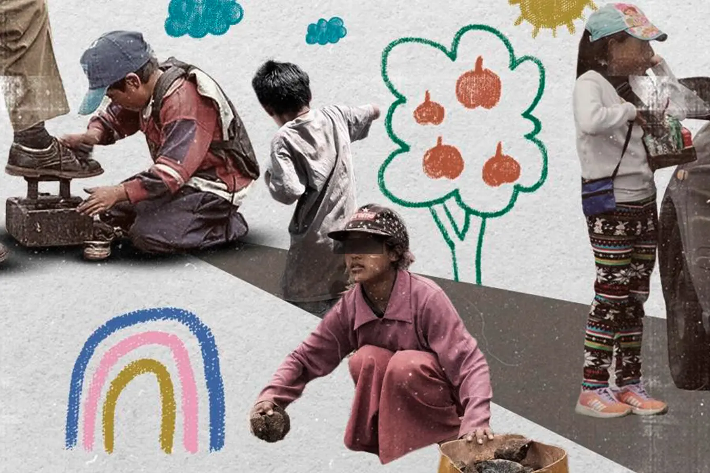

Conoce las causas, consecuencias y acciones para prevenir el trabajo infantil y la mendicidad en la ciudad de Cuenca.
Esta plataforma busca sensibilizar a la ciudadanía sobre el trabajo infantil y la mendicidad mediante información confiable, recursos educativos y un juego didáctico basado en la realidad de la ciudad de Cuenca.
Aprende qué es el trabajo infantil, sus causas y consecuencias.
Descubre datos nacionales, internacionales y de Cuenca.
Descarga el tablero físico y aprende jugando.